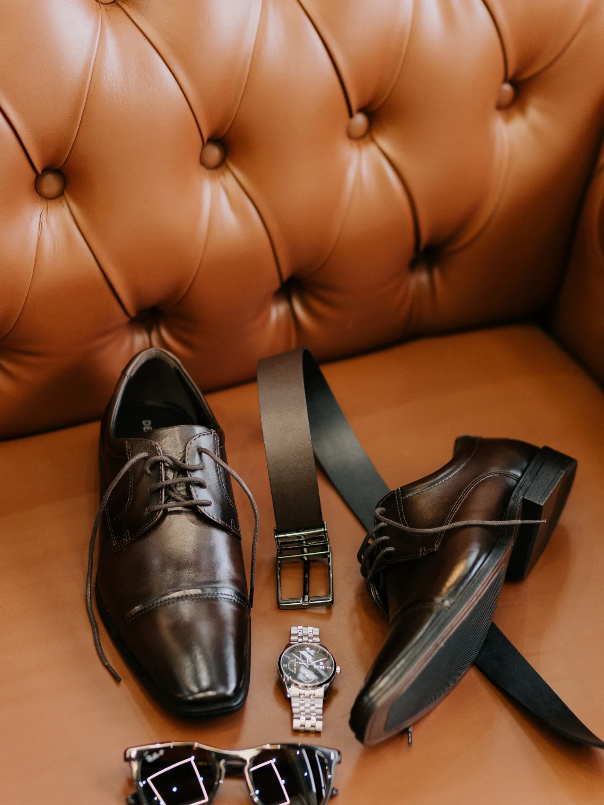
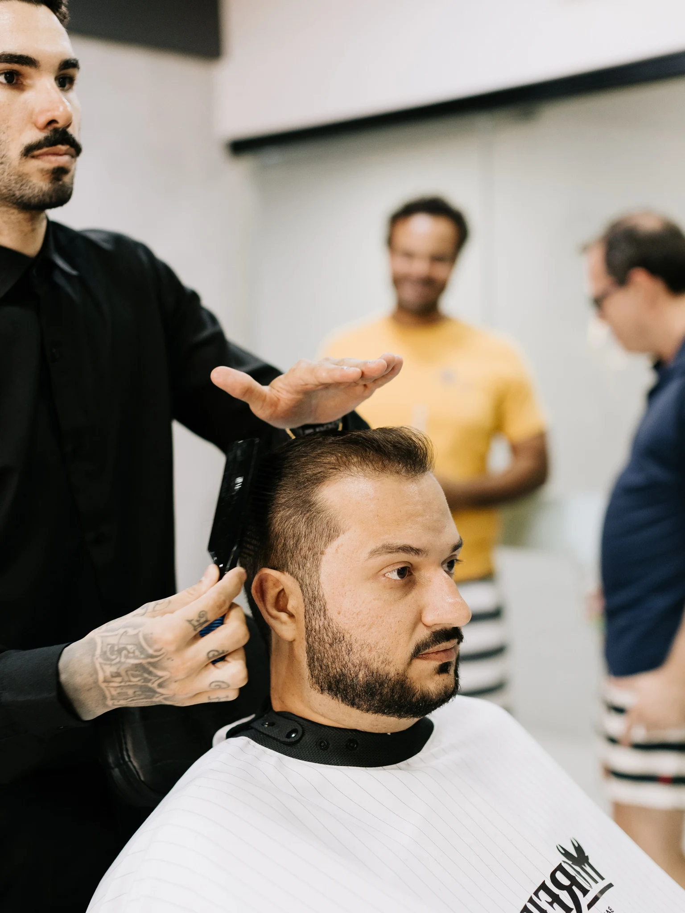
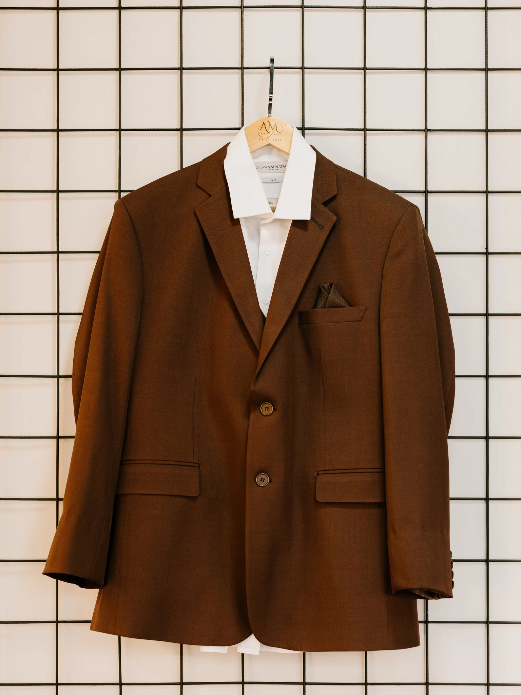
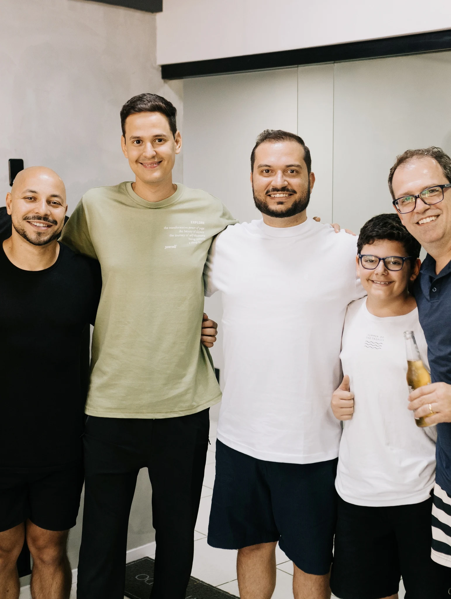
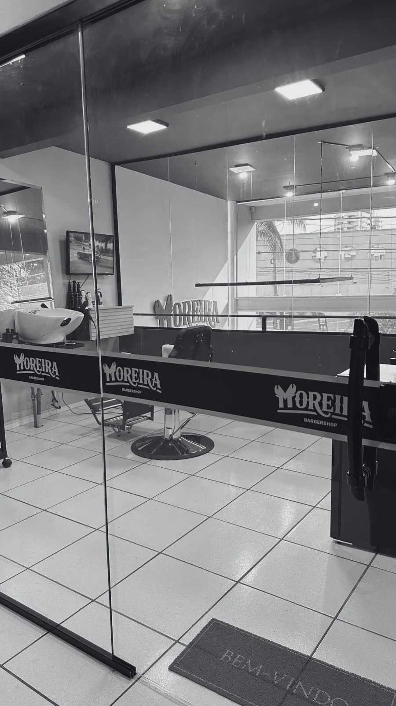
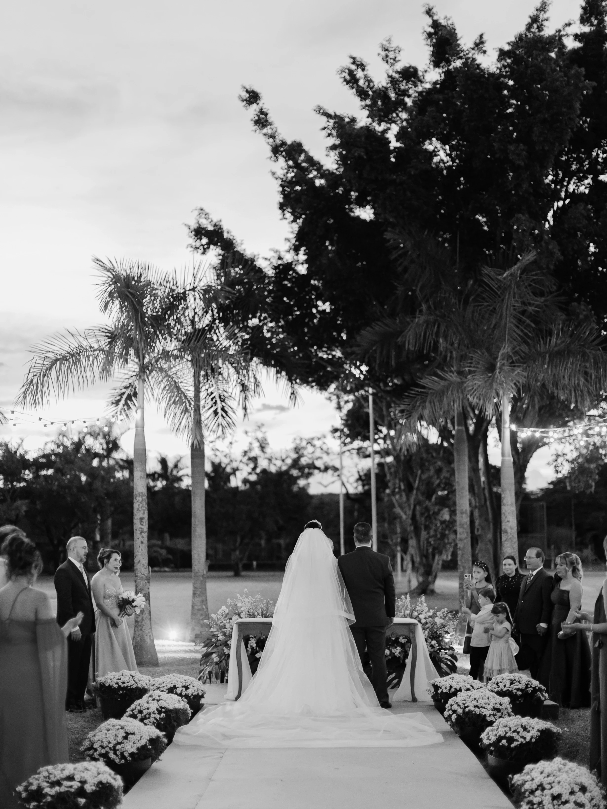

Barbearia Moreira · Dia do Noivo
O seu dia inesquecível merece uma preparação especial.
Estilo, cuidado e confraternização. Viva as horas antes do “sim” ao lado de quem faz parte da sua história.
O grande dia começa nos pequenos momentos.
O momento do noivo
Mais do que um corte.
Um momento para viver.
Antes de subir ao altar, o noivo merece aproveitar algumas horas ao lado das pessoas que fazem parte da sua história.
Aqui na Barbearia Moreira, transformamos essa preparação em uma experiência exclusiva, com estilo, cuidado e confraternização.
Seu espaço para o grande dia
O espaço
Um lugar para desacelerar antes do grande momento.
O Dia do Noivo começa muito antes da cerimônia.
Um ambiente reservado para o noivo se preparar, receber seus padrinhos e aproveitar as últimas horas antes de dizer “sim”.
O relógio que marca as horas. O sapato escolhido para a ocasião. O último ajuste antes de sair.
Tudo faz parte da história que começa naquele dia.
Com quem importa
O Dia do Noivo também é sobre eles.
Padrinhos, amigos, irmãos e pessoas que fizeram parte da caminhada.
Um momento para reunir quem estará ao seu lado em um dos dias mais importantes da sua vida.
Conversar. Brindar.
Dar risada. Criar memórias.


Sala VIP Barbearia MoreiraUma experiência exclusiva
Exclusividade para um dia que é só seu.
Um espaço reservado para receber o noivo e seus convidados com conforto e privacidade.
Ideal para se preparar, reunir os padrinhos, fazer fotos, conversar e aproveitar o momento antes da cerimônia.
- 01 Espaço reservado por até 4 horas
- 02 Ambiente para registros e fotos
- 03 Confraternização com os convidados
- 04 Corte, barba e outros cuidados

Seu próximo capítulo
E se o grande dia
começasse aqui?
Entre em contato e faça um orçamento.
Falar com a Moreira ↗Avenida Rebouças, 2941 · Sumaré, SP